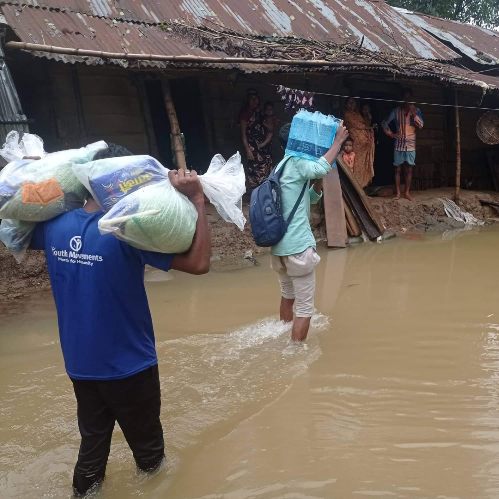

Let's Help Those Who Are
More In Need
Sylhet Flood 2022 Bangladesh: Water levels are dropping
in some areas due to less rainfall. On Monday morning, the flood situation in Sylhet remai
Donate Today
Villagers in Sylhet, Bangladesh’s northeast, have had to wade through streets that were up to their knees in water.
Bangladesh faces a humanitarian disaster, according to former MP Syed Rafiqul Haque, with “almost the entire Sylhet-Sunamganj region… under water and millions of people… stuck.”
Other Amount (Taka)
Our Donate Plan
I have never seen anything like this before. I saw dead bodies floating in the water and dead animals washed up.
The extent of the damage is horrendous,” said Jakir Hossain,
the coordinator for the Islamic Relief charity in Sylhet
Food For A Fimily
amra potita family list korbo. Tarpor list moto sobay k food donate korbo. ar fole poteti family food thik moto pabe
Shelter For A Fimily
amra potita family list korbo. Tarpor list moto sobay k shelter donate korbo. ar fole poteti family shelter thik moto pabe.
Education For A Children,
amra potita family list korbo. Tarpor list moto sobay k Education bavosta korbo. ar fole poteti family Education thik moto pabe.

Their lives depend on your donation
Members of the Bangladeshi military were able to reachsome settlements on small boats on Monday to deliver rice,
thousands of packets of dry food, water purification tablets and medicines.
How To Contribute
Get My Updates
Sunamganj Water Development Board executive engineer Zahurul Islam remarked,
“Rainfall in Sunamganj has fallen, and river levels have dropped significantly. Floodwaters have also receded in other areas.”